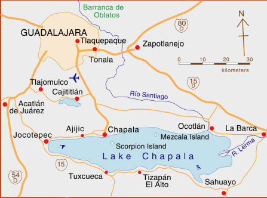

|
|
Donato Guerra No. 9 P.O. Box 30 |
|
Home
|
Where We are LocatedOur Hotel is located on the shores of Lake Chapala in the small picturesque Village of Ajijic. All local sights and services are within walking distance. Lake Chapala is surrounded by a range of majestic mountains plus the extinct volcano Mount Garcia is located directly across the lake from us. 
Access to Ajijic is quite easy since we are located only 30 kilometers from the Guadalajara International Airport. There is excellent cab service from the airport. The charge is $ 40.00 USD for the 25 min. trip to lakeside. If you wish to drive from the border many snowbirds arrive by vehicle taking the 12 hr. mainly toll road drive from Laredo Texas. View Larger Map |